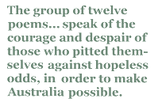

As a direct descendant of a 19th century sea captain I was immediately drawn to Alan Gould’s historical nautical poems.
In this essay I have used direct quotations where I feel that my own responses are necessarily less immediate than Gould’s own words.
Alan Gould is a prolific poet and novelist whose Australian identity is often intensified by a tension that draws him back to the Europe of his childhood. Australia, the home base, is often seen from a distance. His Icelandic mother and his peripatetic European and Asian childhood left an imprint that haunts Alan Gould’s Australian maturity.
The group of twelve poems which he has called ‘Maritime Photographs’ (from Astral Sea, 1981) speak of the courage and despair of those who pitted themselves against hopeless odds, in order to make Australia possible. In the 19th century sea travel was as dangerous as space travel.
The first poem, in rolling tercets, is simply ‘The Sea Herself’:
... in blowy latitudes
when cross-jack high she moved her cordilleras ...
The common-place phrase ‘mountainous seas’ is dwarfed by ‘she moved her cordilleras’ — not one mountain, but endless ranges of mountains. In his essay ‘Bolero and the Sea’ Gould writes:
And as for the ocean itself, I can sit on a dune, or watch from a ship’s rail, and its spectacle is reiterative without ever being repetitious. It moves like Ravel’s Bolero, remorselessly and lightly, running with small variations.
The poem portrays the continuity and variations, graphically and experientially:
the foothold missed, the screaming, then its absence ...
... She breathed, outgrowing all our metaphors ,
as she outgrew our lives. She was not life
or death. She was the clarity beneath
all lives, all deaths ...
‘Recalling Her Launching (Cutty Sark, November 23rd 1869)’ tells of the tea-clipper Cutty Sark launched in Dumbarton, Scotland in 1869, now preserved in dry dock at Greenwich, London. The poem is sturdily built like the subject, but like the ship, with its ‘midnight tumblings’, can roll with the current. Beauty and hardship intermingle in striking lines and images:
... Sights could mesmerise, an iceberg say —
dazzling molar moving on the blue...
... If we gained any wealth it was the sense
how time moves like the sea ...
... when self-doubt
bred like money in intellectual London ...
‘Ice (Cromdale 1892)’ speaks of the time the steel-hulled Cromdale, built in Scotland for the Australian wool trade in 1891, was nearly imprisoned amidst towering icebergs while rounding Cape Horn. The poem, in tercets, seems iridescent:
To windward midnight glowed, iridium sheen ...
No one spoke. By dawn the sea was astral,
dazzling planets moving over opal ...
The fourth poem, ‘Port of Melbourne Song’ relaxes into a tipsy, trimetrical form :
Flash rooms of noise and stars
with mirrors on the wall —
and Port of Melbourne’s bars
are whirling ports of call ...
The sea lurches through the jollity of ‘random selves’ who
... choose to be removed
from every point of rest
and pitch what most was loved
into the sea’s unrest ...
and paradoxically come to a point of stasis ‘aeons from Melbourne’s bars’, amid that ‘sea’s unrest’.
‘Any Two Pictures (Schomberg, 1855)’ tells of the passenger ship Schomberg, reputedly the finest state-of the-art clipper ever built, which foundered on the coast of Victoria, Australia. The four hundred and thirty passengers were rescued but the captain was tried for neglect of duty, though subsequently acquitted. There were tales of drink and women. The poet sees a kind of ‘exactitude’, a moral synchronicity in the incident:
...the self and rocks and vessel all construed
the one necessity, a free man’s flawless past.
I think Gould illuminates this notion in his essay ‘Bolero and the Sea’:
The sea’s horizon is thus an image for both ultra and ultima, and the deeps themselves create trials by which we pass from here to there, both geographically and within personal experience. For these trials the sea requires of us skill, attentiveness and courage, but in return it is utterly indifferent to our lives.
The sixth poem, ‘The Wave (Blackadder 1873)’, lives the terror of a typhoon which partly dismasted the iron-hulled clipper carrying coal from Newcastle to Shanghai. The ship faces ‘obsidian seas’ which gather to a ‘rogue wave’ which ‘gathers up the world’s horizons, making, like a mother, you its centre’, continuing the strand that runs through this group of poems, and much of Gould’s work generally, of the sea as an existential matrix:
Your luck? Your fate? The thing eludes its name
but quietly stands between your life and death.
This idea is carried on in ‘Still Lives (Ariel, Thermopylae 1872)’, which tells of the tragic clipper Ariel that set sail from London for Sydney in 1872 but never arrived:
The immensity of the oceanic night is chillingly numinous:
... while overhead, remote, exacting stars
pause in their nightly circle. Only trust us,
they state, we are the map that’s true, trust us.
This ship’s about to vanish without trace ...
A ship glides home, the thronging docksides cheer,
while on a mainrail veers the programmed wave.
I see the drowning men I cannot save.
Poem eight, ‘35 ºS 5 ºW (Sobraon, 1883)’ is like a Munch painting in its intense focus on an immediate existential moment. It tells of the suicide of nineteen-year-old Miss Gertrude McCausland who was voyaging from London to Melbourne and jumped into the sea when friends objected to her relationship with a male passenger. A newspaper report said ‘the young lady, who was of a nervous and excitable temperament, took their remarks so much to heart that she threw herself overboard at night and was drowned’. But Gould sees beyond the passengers’ ‘discourse [which] issues / from the lit saloon’ to the same exact confluence of time and phenomena that we saw in earlier poems in this set; we should
imply no failures, only that
her years are fixed upon this chemistry
as marks upon a map ...
The title of poem nine: ‘Krakatoa (Charles Ball 1883)’ is self-explanatory. The British ship Charles Ball was in the Sunda Strait when Krakatoa exploded. The captain described the tsunami on the coast of Java where ‘islands uproot themselves like teeth ...’ where cause and aftermath’ are joined in ‘that shy charge’ in another precise moment of ‘instantaneous freedom’.
The pensive Tropic (Harbinger 1880s)’, another variation on the geographic metaphor, is almost narcotic in its pentameter’s lulling rise and fall. There was a ship called Harbinger which carried immigrants to Australia in the 1880s, but I can find no reports of any disaster or event which might have inspired the poem. I thought of Keats when I read:
Night is a fan unfolding all of time.
There seems no wind now but the helmsman’s whistle.
Yet look, the skysails lift like moths in moonlight,
we hear the tender sea begin to snore ...
I wondered whether some reference to the Flying Dutchman’s ship, the harbinger of doom, was intended.
‘The Past Completes Me (Torrens, 1883, recalled 1920)’ might be told by Flores, the daughter of the owner and first master of the Torrens, Captain Henry Robert Angel. Flores Emily Angel modelled for the figurehead of the Torrens, carved by Joseph Melvin. A headless (incomplete) full-sized figurehead, thought to be the figurehead from the Torrens, was found on the rocky south-west coast of Macquarie Island. Flores’ brother, Falkland, was in charge of the vessel when it struck an iceberg.
The ‘long live England, long live Captain Angel’
was me (I think). For I was a loon
precocious girl, and lanterns ringed the poopdeck
and a shilling moon had bobbed
above St Vincent’s cherry skyline. Most
I ruled that shushed delirious sea,
house of my euphoria. Long live that thought ...
The speaker of the poem has outgrown England ‘by tiny increments’ and has become accustomed to distance and difference. She takes ‘the houseless sea for home’. Here Gould has resolved some tensions found in the rest of the poems.
The twelfth and last poem in the set, ‘The Ship In Its Trance (Loch Ard 1878)’, written in a nonce form influenced by the sestina, villanelle, rondeau and pantoum, uses the implacable tolling of the repetends to drive home its deadly story. In 1878, the clipper Loch Ard ran too close to the Melbourne coast in a fog. When the captain saw the cliffs and surf he tried to turn the ship but ran it onto a reef where it sank within twenty minutes. Fifty-two lives were lost. There were only two survivors, Tom Pearce, an apprentice, and a young woman, Eva Carmichael, who lost her entire family in the wreck. The poem explores again that dispassionate image of the sea as a kind of matrix where process and stasis meet and are resolved, often harshly.
Thomas Hardy’s poem about the Titanic, ‘The Convergence of the Twain’ begins:
In a solitude of the sea
Deep from human vanity...
Alan Gould’s ‘solitude of the sea’ is at once human and detached.
Amid farewells and muslin sleeves,
a mooring hawser splashes free,
a bowsprit sleepwalks through it arc.
The vessel moves and does not move
amid farewells and muslin sleeves ...
... how tiny strands of circumstance
create from rock and tumbling surf
what is incipient, exact,
the mesh of fate, but where are you
among the strands of circumstance,
that mesh of fate, yes where are you,
whose thought engages now and then,
this ship, stick insect caught in amber
with the farewells and muslin sleeves
that mesh both fate and where you are.
Australians love the sea. Most of us live near the coast. Alan Gould reveals the loneliness of this island continent. Perhaps the true home of the Australian soul is somewhere in mid-ocean, suspended between departure and arrival. Our past completes us.